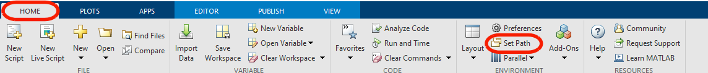
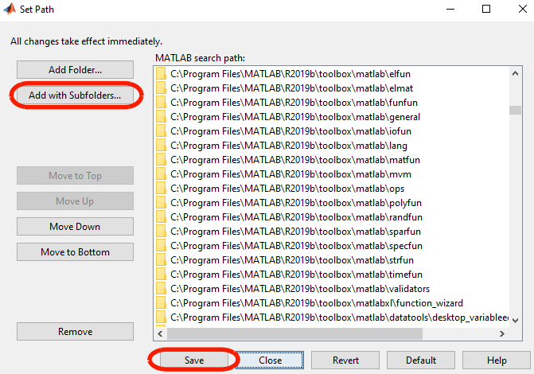

Installation¶
Requirements¶
DeerLab requires MATLAB, version R2017a or later. No additional tooboxes are required, but if the Optimization Toolbox is installed, DeerLab will make use of it.
Setup¶
In order for MATLAB to access the DeerLab API functions, the path to DeerLab installation folder must be set.
- Method A) Add DeerLab path via MATLAB’s IDE
On the
Hometab, in theEnvironmentsection, clickSet Path.Click
Add with Subfolders...and select theDeerLab\functionsdirectory.Click
Saveto save the current MATLAB search path and exit viaClose.
- Method B) Add DeerLab path at startup
- Open (or create) the
startup.mfile in the default\MATLABdirectory. - Add the following lines of code:
addpath('mypath/DeerLab/functions')
- Save
startup.mand restart MATLAB.
- Open (or create) the